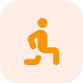
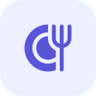
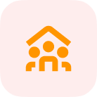
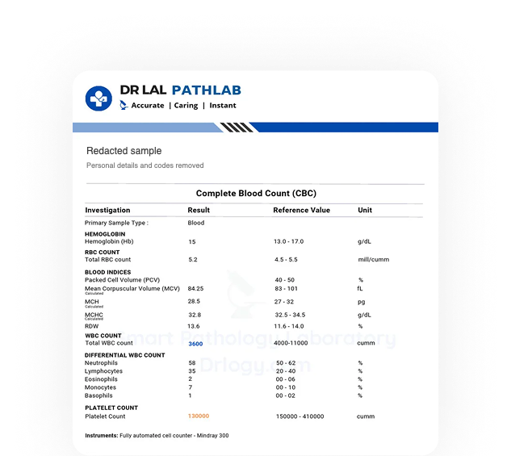
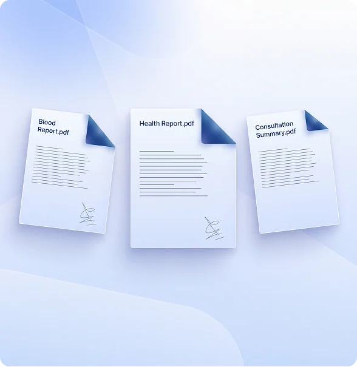

Your reports, food, movement, recovery and care all tell part of your story. Orb connects them—so your next step makes sense for you.
Equivalent to ₹666.58/month, billed annually.
Built by doctorsBuilt with doctors & professionals
Designed around your dataReports, activity, nutrition & recovery
Your choice to connect & sharePermissions and eligible expert services
Start at ₹0Explore first. Upgrade if it helps.
Free plan
Track your health, all in one place & more.
DashboardHealth Vault
HEALTH VAULT3Example records
Health recordsAll files
Blood count reportSample lab · 12 Oct 2026
Consultation summaryExample clinic · 9 Oct 2026
PrescriptionExample clinic · 9 Oct 2026
Illustrative example
PRO
Get tailored plans and daily AI insights.
orb Intelligence
Monday · 8:15 AM · Illustrative example
Your sleep was shorter than usual last night. How are you feeling this morning?
A little tired. I have about 20 minutes to exercise.
Would you like to review a shorter workout option for today?
Today’s focus
A shorter workout option that fits the time you have.
Your first step. On us.
Get a food plan that considers your routine, or explore your fitness starting point. Choose something useful to you—and start free.
Free diet plan
Make room for your kind of food.
Bring your food preferences, goals and everyday routine into a plan you can begin with.
Free fitness assessment
Get to know your starting point.
Explore guided movement with a fitness assessment, and bring that context into your training.
All your health world, connected in one place.
Bring supported wearables, health reports, glucose information and daily logs together. Find useful context for your next step.
Do I need a smartwatch or fitness tracker to use Orb?
No wearable? You can still begin with your goals, existing records and daily habits. Supported device models and data availability will be confirmed in the app.
What information can I connect and share?
Explore records, daily inputs and supported device information. The available integrations and sharing permissions depend on the released product and service.
Glucose, with the day around it. Illustrative example · 26 October 2026 · 06:00–18:00 · mg/dL
Average103.4Minimum92Maximum118
All values in mg/dL. Synthetic demonstration data.
Get a daily health action plan
A personalised daily plan for your fitness, nutrition and health, shaped around your routine and the goals you choose.
How is my daily action plan personalised?
Your goals, food preferences, movement and available health information help add context to suggested next steps. Review what fits your day in Orb.
How does the plan fit my everyday routine?
Bring your available time, meals, activity and notes into your planning. Personalised plan access depends on your app plan; final Free and Pro inclusions are being confirmed.
AI + professional support, in your pocket
Ask Orb your everyday health questions. Explore daily guidance and connect with health professionals through optional care services.
Who do I talk to when I have questions?
Orb supports everyday understanding and planning. Optional professional care is purchased separately; the professional and follow-up depend on the service you choose.
Does Orb make treatment decisions?
No. Diagnosis, clinical assessment and treatment decisions belong with appropriately qualified professionals. Orb helps organise the everyday context you bring to them.
1 / 3 · Connect your health world
The AI health agent for every moment
Daily insights
A little direction. A day that works for you.
You want to eat consistently and train three days a week. Your calendar has other ideas. Here’s how a plan can fit around both.
Original app design · Illustrative example
Food & nutrition
Eat better without the guesswork.
Plan your meals, track what you eat and get nutrition guidance that fits your lifestyle.
Original app design · Nutrition values are estimates
Training & movement
Train smarter, at your own pace.
Your goals, movement, experience and available equipment help shape your plan. Build a routine around the days you can actually train.
Original app design · Illustrative workout plan
Cycle & journal
Understand your body better.
Track your cycle, symptoms, mood and daily changes to recognise patterns over time. Upcoming dates are estimates.
Original app design · Cycle dates are estimates
Biological age
Your age is a number. How is your body ageing?
Explore an illustrative biological age estimate and the available information behind it. Review relevant findings with a professional.
Original app design · Illustrative estimate
Care & assessments
Know where your health stands.
Explore health assessments and professional support to understand what needs attention.
Original app design · Care purchased separately
1 of 6 · Daily insights
AI health agent, built with doctors.
“One of the most promising approaches I’ve seen. Bringing together the depth of medical science, the intelligence of technology, and the precision of personalized care.”
Dr. Vijesh Vijayan(Medical Director)
Orb Pro opens up more possibilities.
More direction, every day. ₹7,999 / year
Equivalent to ₹666.58/month, billed annually.
AI health coach
Bring useful context into your next step.
Daily health insights
Review what matters in your everyday information.
Biological age
Explore the context behind available estimates.

Workout plan
Plan around your goals, time and equipment.

Meal plan
Make room for your food and your routine.
AI fitness trainer
Connect assessment, planning and workout logs.
CGM insights & reports
Review supported glucose data with your day.
Voice logging
Say what you did, then review the entry.
Health Vault
Keep your reports, dates and sources together.

Family Circle
Explore selected sharing with people you trust.
Illustrative feature overview. Final plan inclusions are awaiting confirmation.
Personal Health Vault
All your health records in one place. Ready for what’s next.
A report shouldn’t disappear into a folder. Bring your records together, keep the originals and carry useful context into your next conversation with a professional.
Original app design · Illustrative example
Keep the whole story
Reports, prescriptions and history, with their sources and dates.
See what has changed
Review available results across reports, alongside information you’ve added.
Share on your terms
Choose relevant records to discuss with a professional. Explore available sharing controls.
Health Vault

Redacted report sample · Original source layout, for illustration only
Your history, with context
Bring the useful details together.
Review report dates, sources and the questions you want to take into your next conversation.
26 October 2026Blood count report · Demo Laboratory
24 October 2026Consultation note · Demo Clinic
Follow your cycle and how you feel.
Log periods and symptoms, review your history and see estimates for upcoming dates.
Illustrative example · Upcoming cycle dates are estimates.
Voice logging
Finish your set. Say what you did.
Try logging your exercise, weight, repetitions and sets by voice. Check the details and make them your own.
Voice input is available in supported browsers. You can also type an entry below.
You choose when the microphone starts. Your browser handles speech recognition and may send audio to its speech provider. Orb does not upload audio or save this trial to your account.
This trial gives you up to 60 seconds of microphone input per page visit. You can stop at any time. Your draft stays on this page only.
Cureocity Blueprint
Understand your starting point. Build from there
Bring your history, nutrition and movement into the professional consultations included in your assessment. Leave with findings and next steps you can return to.
Illustrative example. A guided movement assessment forms part of your starting point.
Illustrative example. Bring your health history, relevant reports and questions into a professional consultation.
Illustrative example. Your food preferences, routine and nutrition needs contribute to your assessment.
Health historyRelevant reportsMovement assessmentProfessional consultations
→
Cureocity Blueprint
Your starting point. Connected.
Assessment findings
Agreed priorities
Next steps
Illustrative example
Illustrative example. Health history, relevant reports, movement assessment and professional consultations contribute to your Blueprint.

Your Blueprint
Findings you can build from.
Your assessment findings
Agreed priorities
Your next steps
Illustrative example. Package inclusions vary.
Illustrative example. Return to your assessment findings, agreed priorities and next steps.
1 / 5
Assessment at a centre
Bring your starting point into focus.
Explore the movement assessment and professional services available at your local hub.
Illustrative example. A guided movement assessment forms part of your starting point. In-person availability depends on your centre.
Illustrative example. Bring your health history, relevant reports and questions into a professional consultation. In-person availability depends on your centre.
Illustrative example. Your food preferences, routine and nutrition needs contribute to your assessment. In-person availability depends on your centre.
Health historyRelevant reportsMovement assessmentProfessional consultations
→
Cureocity Blueprint
Your starting point. Connected.
Assessment findings
Agreed priorities
Next steps
Illustrative example
Illustrative example. Health history, relevant reports, movement assessment and professional consultations contribute to your Blueprint. In-person availability depends on your centre.
Your Blueprint
Findings you can build from.
Your assessment findings
Agreed priorities
Your next steps
Illustrative example. Package inclusions vary.
Illustrative example. Return to your assessment findings, agreed priorities and next steps. In-person availability depends on your centre.
1 / 5
Built by doctors. Designed for life.
Your health is more than numbers on a screen. That’s why we built Orb with medical expertise at its core — connecting your health data, understanding the bigger picture, and turning complex information into meaningful insights for everyday life.
Dr Lubna Ali
Medical director, Cureocity
Dr Vijesh Vijayan
Medical director, Cureocity
1 / 2
Choose your way
Choose how you want support
Completely online
Start with daily routine
Use the digital planning, tracking and information tools available in your Orb plan.
Online with expert care
Add the expertise too
Explore consultations and follow-up through a separate professional service.
Hybrid with an offline centre
Bring your plan into your training
Connect in-person training and assessment with the progress you follow in Orb.
Care is optional and purchased separately. Assessment packages and hub memberships are separate services. Imagery is illustrative.
Family Circle
Stay close. Keep your independence.
Share selected health summaries with the people you trust. They can stay informed, while you remain in control of what you share and who has access.
Care for someone without taking over. Permission comes first.
Illustrative sharing concept. Released sharing controls await confirmation.
1 / 5
Get Orb Pro Membership
Orb Pro connects your health data, delivers personalised AI insights, and guides you toward smarter health decisions every day.
₹7,999/ year
Daily health insights
Biological age
Personalised nutrition & meal plans
AI fitness assessment & training
CGM metrics & analysis
Equivalent to ₹666.58/month, billed annually.
Plan inclusions awaiting confirmation.
A plan for your food & movement
Choose a starting point in Orb. Download the app, register and open the relevant feature.
Make your next meal easier to decide
Build a diet plan around your goal, food preferences and routine.
‹
Meal plan ProMonday, 26 October
2627282930311
1,200 kcalof 2,000 kcal
Estimated daily nutrition
18 gFibre75 gProtein150 gCarbs
Illustrative example · Estimates
Know what to train, and where to start.
Build a workout plan around your goal, fitness level and available equipment.
Used by athletes, founders, and members just like you
1 / 3
Frequently asked questions
Understand how Orb fits your life before you choose.
What can I try for free?+
The existing offer includes a free diet-plan starting point and a free fitness assessment. Their entry links and account requirements are awaiting confirmation. Ongoing Free and Pro app inclusions are still being confirmed.
No. Start with your goals, existing records and everyday habits. Device-based information depends on supported devices and the permissions you choose.
What does Orb add if I already use a wearable?+
Orb brings available device information alongside your reports, meals, workouts, symptoms and notes. That everyday context can help you understand the information and review a practical next step. Check compatibility before connecting a device.
Can I use reports I already have?+
The Health Vault experience is designed around existing reports, with their originals, dates and sources. Supported formats, extraction and sharing controls need to be confirmed in the released app.
What is included in Pro?+
Pro is presented for personalised plans and deeper insights, at ₹7,999/year. The exact meal-planning, fitness, daily-insight and CGM entitlements are awaiting commercial confirmation. Equivalent to ₹666.58/month, billed annually. This is not a monthly payment option.
No. Professional care is optional and purchased separately from the app plan. Confirm the professional, consultations, follow-up, price and location included in the service you choose.
Does Orb replace my doctor or make treatment decisions?+
No. Orb supports understanding, organisation and everyday planning. Diagnosis, clinical assessment and treatment decisions belong with appropriately qualified professionals.
Where are online and in-person services available?+
Availability depends on the selected service and your location. The current service areas, hub locations and booking destinations are awaiting confirmation for this preview.
How can I manage my health information and sharing?+
Review the settings and permissions available in the released app before adding or sharing information. This preview shows selected-summary sharing as a concept; the final controls, privacy policy and authorised data-request route are awaiting confirmation.
More of your story. A clearer next step.
Bring your goals, your routine and what you already know. Start connecting them with Orb.